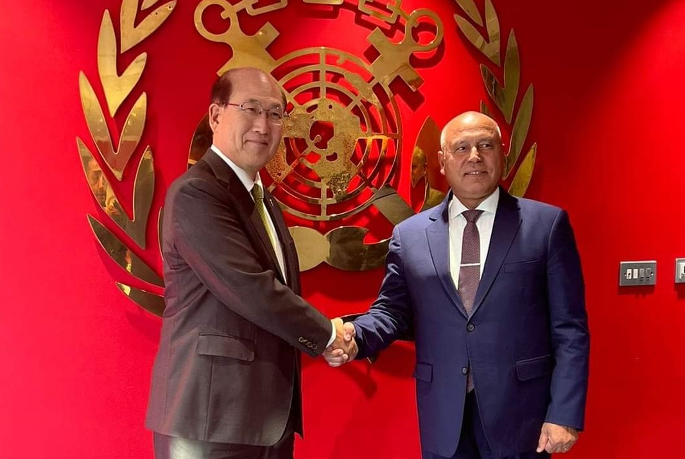

-

Speech by Lieutenant General Engineer Kamel Al-Wazir, Minister of Transport, during the press conference held on Tuesday, October 31, 2023, to announce the launch of the activities of the fifth session of the TransMEA 2023 Transport Exhibition and Conference for Africa and the Middle East, November 5 - 8, 2023.
Speech by Lieutenant General Engineer Kamel Al-Wazir, Minister of Transport, during the press conference held on Tuesday, October 31, 2023, to announce the launch of the activities of the fifth session of the Transport Exhibition and Conference for Africa and the Middle East, TransMEA 2023, November 5 - 8, 2023, which will be held under the patronage and honor of His Excellency the President of the Republic, under the slogan of localization of the transportation industry. in Egypt
-

The Egyptian and Sudanese Ministers of Transport chair the 181st meeting of the General Assembly of the Nile Valley River Navigation Authority
The Egyptian and Sudanese Ministers of Transport chair the 181st meeting of the General Assembly of the Nile Valley River Navigation Authority and discuss ways to solve the problem of truck accumulation on the Egyptian-Sudanese border.
-

Within the Framework of Implementing the Integrated Logistics Corridor (Tanta / Mansoura / Damietta) by the Ministry of Transport - The Minister of Transport Conducts an Inspection Tour at Damietta Sea Port to Follow up the Implementation Rates of the Projects Being Implemented in the Port
Lieutenant-General Engineer / Kamel Al-Wazir - Minister of Transport made an inspection tour at Damietta Sea Port in order to follow up the implementation rates of the projects being implemented in the port and at the beginning of the tour the Minister of Transport met with the Chairman of the Port Authority, the Authority Leadership, and its employees …
-

The Ministry of Transport Signs a Memorandum of Understanding with the South Korean Government Represented by the South Korean Company STX
The Egyptian government, represented by the Ministry of Transport, signs a memorandum of understanding with the South Korean government represented by the South Korean company STX on development works and strategic partnership in Jarjoub economic zone, including an industrial logistics zone and Jarjoub sea port.
-
 On the sidelines of his participation in the International Maritime Organization elections - the Minister of Transport meets with the Secretary-General of the International Maritime Organization in London
The Minister: All Egyptian ports are currently witnessing comprehensive development processes with the aim of implementing the directives of His Excellency the President to make Egypt a global center for trade and logistics.
(Quoted from the Ministry of Transport page) …
-

Minister of Transport: While casting his vote in the presidential elections
The great demand of Egyptians to participate in the election of the next president of Egypt proves to the world that the Egyptians are always an amazing people. They record a wonderful heroic and patriotic epic and, as usual, set an example of love for the homeland.
(Quoted from the Ministry of Transport page) …